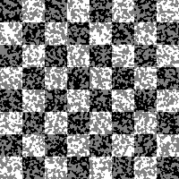
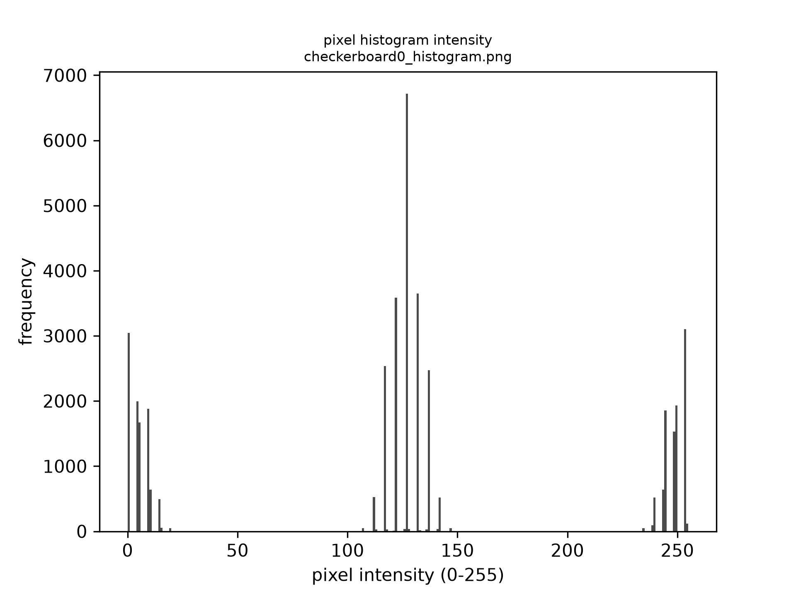
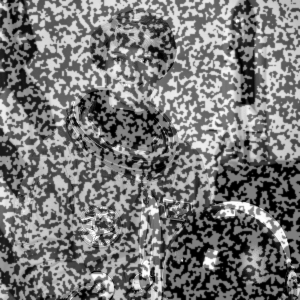
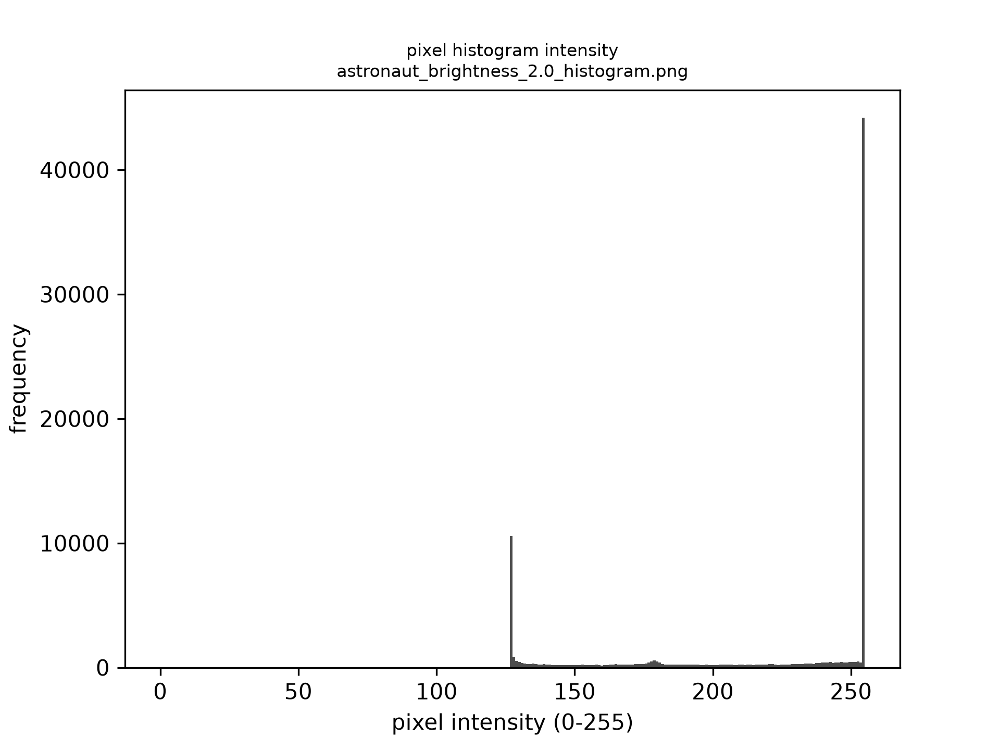
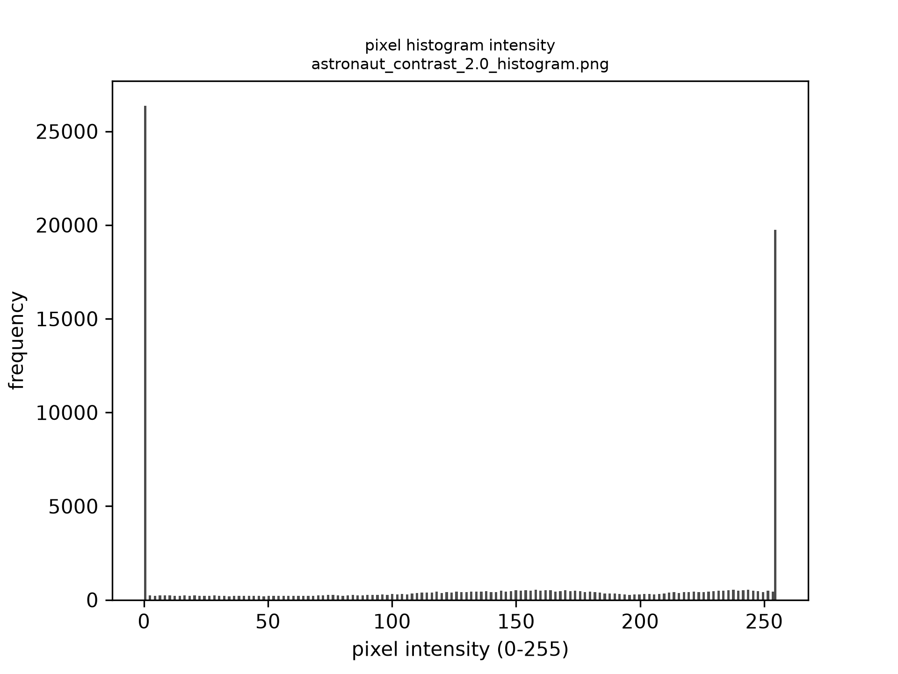
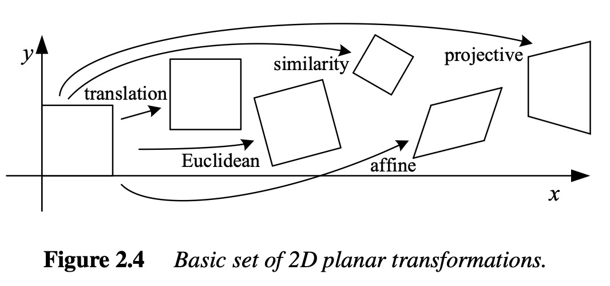

Introduction
dictk (Digital Image Correlation Toolkit) is a Python library for digital
image correlation (DIC) — comparing images of a specimen before and after
deformation to measure displacement and strain fields.
This guide is a work in progress. For now, it covers the one primitive the toolkit ships with.
Installation
pip install dictk
Getting started
dictk currently provides a single building block: zero-normalized
cross-correlation (ZNCC), the similarity metric DIC template matching is
built on.
import numpy as np
from dictk import zero_normalized_cross_correlation
a = np.array([[1.0, 2.0], [3.0, 4.0]])
b = np.array([[2.0, 4.0], [6.0, 8.0]])
score = zero_normalized_cross_correlation(a, b)
print(score) # 1.0 -- correlated up to a brightness/contrast rescale
Image Generation
The source for the commands on this page is
dictk's ownrosta,checkerboard, andastronautsubcommands — seedictk --help.
Note: the images embedded on this page are rendered as PNG (
--format png), notdictk's default TIFF. Browsers don't natively render TIFF in<img>tags, so a TIFF embedded here simply wouldn't display.Among the alternatives, PNG also wins on its own merits: it is lossless, whereas JPG's compression tends to smear hard edges and speckle-pattern detail (for the 200x200 checkerboard on this page: TIFF 40,256 bytes, JPG 6,760 bytes, PNG only 418 bytes — JPG is actually larger than PNG here, because its block-based compression is a poor fit for hard-edged content like a checkerboard). SVG doesn't help either: since there's no vector structure to trace,
dictk's SVG output just wraps that same PNG in a base64-encoded XML container, which comes out to 809 bytes here — roughly double the raw PNG for no rendering benefit.TIFF remains
dictk's command-line default, since it's the lossless, uncompressed format conventionally used for DIC and other scientific-imaging workflows.
CLI vs. API: the Command Line Interface (CLI) subcommands on this page (
dictk rosta,dictk checkerboard,dictk astronaut) write an image file to disk — that's their whole job. The corresponding Python functions,dictk.rosta,dictk.checkerboard, anddictk.astronaut, take the same parameters but perform no file I/O: they return a NumPy array only. That keeps the Python API composable in a functional style — arrays can be piped through further functions (e.g.combine_imagesbelow) before anything touches disk — and callers who do want a file calldictk.imaging.write_imageexplicitly, as a separate step. See each function's docstring (rendered in the API reference) for details.
Rosta
We create a synthetic example speckle pattern with the built-in rosta
image generator. It implements the Rosta algorithm described by
Olufsen (Olufsen SN,
Andersen ME, Fagerholt E. muDIC: An open-source toolkit for digital image
correlation. SoftwareX. 2020 Jan 1;11:100391, Algorithm 1, page 6,
repository).
The help text for rosta:
dictk rosta --help
returns
usage: dictk rosta [-h] [--dot-size DOT_SIZE] [--density DENSITY]
[--smoothness SMOOTHNESS] [--random-seed RANDOM_SEED]
[--output OUTPUT] [--format {tiff,png,jpg,svg}]
[width] [height]
positional arguments:
width Image width in pixels (int), default: 200.
height Image height in pixels (int), default: 200.
options:
-h, --help show this help message and exit
--dot-size DOT_SIZE, -s DOT_SIZE
Dot pattern size factor, 0.0 to 100.0 (float),
default: 4.0.
--density DENSITY, -d DENSITY
Dot pattern density, 0.0 to 1.0 (float), default:
0.32.
--smoothness SMOOTHNESS, -m SMOOTHNESS
Smoothness factor, 0.0 to 100.0 (float), default: 2.0.
--random-seed RANDOM_SEED, -r RANDOM_SEED
Seed for reproducible pattern generation (int),
default: 42.
--output OUTPUT, -o OUTPUT
Output directory (path), default: current directory.
--format {tiff,png,jpg,svg}, -f {tiff,png,jpg,svg}
Output image format (str), default: tiff.
Create a synthetic image, 200 by 200 pixels, 50% dot density:
dictk rosta 200 200 --density 0.5 --format png -o .
Saved image: rosta_200w_by_200h_dot_4.0_den_0.5_smo_2.0.png
Note that the file name is automatically chosen based on the input parameters.
The result:

The Python equivalent returns the same pixel data as a NumPy array, with no file written:
import dictk
pattern = dictk.rosta(200, 200, density=0.5)
shape=(200, 200), dtype=uint8
Checkerboard
To make it easier to manually identify discrete points in the speckle
pattern, dictk can also generate a checkerboard test image.
The help text for checkerboard:
dictk checkerboard --help
returns
usage: dictk checkerboard [-h] [--count-x COUNT_X] [--count-y COUNT_Y]
[--output OUTPUT] [--format {tiff,png,jpg,svg}]
[width] [height]
positional arguments:
width Image width in pixels (int), default: 200.
height Image height in pixels (int), default: 200.
options:
-h, --help show this help message and exit
--count-x COUNT_X, -x COUNT_X
Number of rectangles along the width (int), default:
8.
--count-y COUNT_Y, -y COUNT_Y
Number of rectangles along the height (int), default:
8.
--output OUTPUT, -o OUTPUT
Output directory (path), default: current directory.
--format {tiff,png,jpg,svg}, -f {tiff,png,jpg,svg}
Output image format (str), default: tiff.
Create a synthetic image, 200 by 200 pixels:
dictk checkerboard 200 200 --format png -o .
Saved image: checkerboard_200w_by_200h_8x8.png

The Python equivalent, again returning an array with no file written:
import dictk
board = dictk.checkerboard(200, 200)
shape=(200, 200), dtype=uint8
Astronaut
Unlike rosta and checkerboard, which procedurally generate a fresh
synthetic pattern from parameters, astronaut loads a bundled real-world
photograph and converts it to grayscale — useful for exercising dictk's
imaging utilities against something other than a synthetic pattern. The
source is a NASA portrait of astronaut Eileen Collins, from the NASA Great
Images database ("No known copyright restrictions, released into the
public domain."). Its native resolution is 512x512; passing width/
height other than that resizes the source image rather than generating a
new one at that size.
The help text for astronaut:
dictk astronaut --help
returns
usage: dictk astronaut [-h] [--output OUTPUT] [--format {tiff,png,jpg,svg}]
[width] [height]
positional arguments:
width Image width in pixels (int), default: 512.
height Image height in pixels (int), default: 512.
options:
-h, --help show this help message and exit
--output OUTPUT, -o OUTPUT
Output directory (path), default: current directory.
--format {tiff,png,jpg,svg}, -f {tiff,png,jpg,svg}
Output image format (str), default: tiff.
Save it at 300 by 300 pixels — smaller downscales from the native 512x512 start to lose too much detail:
dictk astronaut 300 300 --format png -o .
Saved image: astronaut_300w_by_300h.png

The Python equivalent, again returning an array with no file written:
import dictk
photo = dictk.astronaut(300, 300)
shape=(300, 300), dtype=uint8
Combining into a reference image
combine_images works on any two grayscale images of the same shape, so
it isn't limited to combining the two synthetic images below —
Speckle + Astronaut further down combines rosta
with a real photograph instead.
Speckle + Checkerboard
We combine the rosta speckle pattern with the checkerboard into a
reference image checkerboard0 by averaging their pixel values and
normalizing back to uint8:
from dictk.imaging import combine_images, read_image, write_image
speckle = read_image("rosta_200w_by_200h_dot_4.0_den_0.5_smo_2.0.png")
checker = read_image("checkerboard_200w_by_200h_8x8.png")
checkerboard0 = combine_images(speckle, checker)
write_image(checkerboard0, "checkerboard0.png")
Saved image: checkerboard0.png

Because both inputs are averaged and rescaled together, the checkerboard's squares stay clearly black or white while the speckle pattern shows up as gray texture within them:
- Where the checkerboard is black, speckle white maps to gray and speckle black stays black.
- Where the checkerboard is white, speckle black maps to gray and speckle white stays white.
That trimodal structure is visible in the pixel-intensity histograms below:
speckle and checkerboard are both roughly bimodal (dark/light), while
checkerboard0 picks up a distinct middle hump from the
black/white-speckle-on-opposite checkerboard combinations.
from dictk.imaging import read_image, save_histogram
speckle = read_image("rosta_200w_by_200h_dot_4.0_den_0.5_smo_2.0.png")
checker = read_image("checkerboard_200w_by_200h_8x8.png")
checkerboard0 = read_image("checkerboard0.png")
save_histogram(speckle, "rosta_histogram.png")
save_histogram(checker, "checkerboard_histogram.png")
save_histogram(checkerboard0, "checkerboard0_histogram.png")
Saved histograms: rosta_histogram.png, checkerboard_histogram.png, checkerboard0_histogram.png
| rosta | checkerboard | checkerboard0 |
|---|---|---|
 |  |  |
Speckle + Astronaut
The checkerboard above is a stand-in for an actual specimen — in a real
DIC setup, the speckle pattern is applied directly to the surface being
measured, not swapped in from another generator. Combining rosta with
the astronaut photo instead of the checkerboard is closer to that: a
speckle pattern overlaid on a realistic, non-uniform grayscale image.
This time the two source images are never written to disk at all — both
dictk.rosta and dictk.astronaut return arrays directly, which
combine_images accepts as-is, so only the combined result astronaut0
is saved:
import dictk
from dictk.imaging import combine_images, write_image
speckle = dictk.rosta(300, 300, density=0.5)
photo = dictk.astronaut(300, 300)
astronaut0 = combine_images(speckle, photo)
write_image(astronaut0, "astronaut0.png")
Saved image: astronaut0.png

Both checkerboard0.png and astronaut0.png are also bundled in
src/dictk/data/, alongside the source astronaut.png, so later examples
can reuse them without regenerating from scratch each time.
Image Processing
Certain preprocessing steps can make digital image correlation more robust to differences in brightness and contrast between a reference and deformed image. This page covers two of them, using the astronaut reference image from the previous page as an example.
Brightness
Brightness shifts the entire pixel-intensity histogram up or down by a constant amount — the whole image gets lighter or darker together, dark areas included. Pushed too far, dark regions wash out to a flat gray and highlights clip at pure white (255), permanently losing detail.
import dictk
from dictk.imaging import brightness, save_histogram, write_image
photo = dictk.astronaut(300, 300)
write_image(photo, "astronaut_original.png")
save_histogram(photo, "astronaut_original_histogram.png")
bright_1_5 = brightness(photo, 1.5)
write_image(bright_1_5, "astronaut_brightness_1.5.png")
save_histogram(bright_1_5, "astronaut_brightness_1.5_histogram.png")
bright_2_0 = brightness(photo, 2.0)
write_image(bright_2_0, "astronaut_brightness_2.0.png")
save_histogram(bright_2_0, "astronaut_brightness_2.0_histogram.png")
Saved: astronaut_original.png, astronaut_brightness_1.5.png, astronaut_brightness_2.0.png
| factor=1.0 (original) | factor=1.5 | factor=2.0 |
|---|---|---|
 |  |
| factor=1.0 (original) | factor=1.5 | factor=2.0 |
|---|---|---|
 |  |  |
At factor=1.5 the histogram shifts right as a whole — midtones move into the brighter half and the mean climbs, with a few highlights starting to clip at 255. At factor=2.0 the shift is large enough that a big share of pixels pile up at that 255 ceiling, visible as a tall spike at the histogram's right edge: real detail that's been clipped away and can't be recovered.
Contrast
Contrast is the spread between an image's darkest and lightest pixels. Increasing contrast stretches the histogram outward from its own mean — darks get darker, lights get lighter — while the mean itself stays roughly where it was.
import dictk
from dictk.imaging import contrast, save_histogram, write_image
photo = dictk.astronaut(300, 300)
contrast_1_5 = contrast(photo, 1.5)
write_image(contrast_1_5, "astronaut_contrast_1.5.png")
save_histogram(contrast_1_5, "astronaut_contrast_1.5_histogram.png")
contrast_2_0 = contrast(photo, 2.0)
write_image(contrast_2_0, "astronaut_contrast_2.0.png")
save_histogram(contrast_2_0, "astronaut_contrast_2.0_histogram.png")
Saved: astronaut_contrast_1.5.png, astronaut_contrast_2.0.png
| factor=1.0 (original) | factor=1.5 | factor=2.0 |
|---|---|---|
|
| factor=1.0 (original) | factor=1.5 | factor=2.0 |
|---|---|---|
|  |  |
At factor=1.5 the histogram spreads outward from the mean rather than shifting — the astronaut's silhouette and helmet edges get sharper, while the mean barely moves. At factor=2.0 the spread is wide enough that more pixels pile up at both the 0 and 255 ends, crushing fine midtone detail even as high-contrast edges sharpen further.
Key Insight: Contrast stretches the histogram, while brightness translates it.
Image Transformation
Image deformations, also called transformations in the computer vision literature (see Szeliski1), fall into the categories shown below:

References
-
Szeliski R. Computer vision: algorithms and applications, 2nd Edition, Springer Nature; 2022 Jan 3. download (43 MB) ↩
Contributing to dictk
Getting the source code
git clone git@github.com:hovey/dictk.git
cd dictk
Installation
Using uv (recommended)
Install uv if you don't already have it:
# macOS / Linux
curl -LsSf https://astral.sh/uv/install.sh | sh
# or via Homebrew
brew install uv
Then, from the repository root:
uv sync --all-extras --dev
This creates a .venv and installs dictk plus its dev dependencies
(pytest, pytest-cov, ruff). Run commands inside that environment with
the uv run prefix, e.g. uv run pytest.
Using venv and pip (alternative)
python3 -m venv .venv
source .venv/bin/activate # Windows: .venv\Scripts\activate
pip install -e ".[dev]"
Development workflow
Running tests
uv run pytest
With coverage (matches what CI runs):
uv run pytest --cov=src/dictk --cov-report=xml --cov-report=html
Coverage HTML report is written to htmlcov/index.html.
Linting and formatting
ruff handles both formatting and linting.
uv run ruff format # auto-format
uv run ruff format --check # verify formatting without changing files (CI runs this)
uv run ruff check # lint
Building the docs
Documentation is an mdBook under
docs/userguide/, with the
mdbook-cmdrun preprocessor
enabled so pages can embed live, always-accurate command output (see the
"Image Generation" page for an example) instead of pasted-by-hand output.
Neither is a Python dependency:
# mdbook must be pinned to 0.4.52: mdbook-cmdrun depends on the mdbook
# crate's 0.4.x preprocessor JSON schema, which changed in mdbook 0.5 and
# broke compatibility (https://github.com/FauconFan/mdbook-cmdrun/issues/22,
# open as of this writing). Do not `brew install mdbook` or
# `cargo install mdbook` without a --version pin, or cmdrun pages will fail
# to build with "Unable to parse the input".
cargo install mdbook --version 0.4.52
cargo install mdbook-cmdrun
If you already have a newer mdbook from Homebrew or elsewhere on your
PATH, make sure ~/.cargo/bin comes first (or check mdbook --version
reports 0.4.52 before building).
# mdbook-cmdrun resolves each cmdrun command's working directory relative
# to the process's cwd, so you must `cd` into docs/userguide first — running
# `mdbook build docs/userguide` from the repo root will fail with
# "Fail to run shell".
cd docs/userguide
uv run mdbook build # build once, output in docs/userguide/book/
uv run mdbook serve # live preview at http://localhost:3000
uv run puts dictk's own CLI on PATH for the build, since some
cmdrun directives invoke dictk directly.
Building the API docs
Python API reference docs (function signatures, docstrings) are generated from source with pdoc, a dev dependency:
uv run pdoc dictk dictk.core dictk.imaging dictk.cli -o docs/api
dictk.rosta doesn't need to be listed explicitly — pdoc's submodule
discovery respects a package's __all__, and rosta is exported there (see
below), so it's picked up automatically. The other submodules (core,
imaging, cli) aren't in __all__ — dictk/__init__.py only lists the
individual functions it re-exports, not module names — so pdoc's automatic
package walk skips them unless named explicitly on the command line, per
pdoc's __all__ handling. If you add a new top-level submodule, add it to this
command too, or it will silently go undocumented.
uv run pdoc dictk dictk.core dictk.imaging dictk.cli # live preview, serves on localhost
Output goes to docs/api/ (gitignored, regenerated on demand). CI builds
this too and publishes it alongside the mdBook user guide — see "CI/CD
architecture" below.
Building the coverage badge
The README's coverage badge is a real SVG generated from coverage.xml with
genbadge, a dev dependency —
not a static label:
uv run pytest --cov=src/dictk --cov-report=xml --cov-report=html
uv run genbadge coverage -i coverage.xml -o coverage-badge.svg
In CI this runs in the docs job (not test) using the coverage.xml
produced by the test job's report-coverage artifact, so the badge only
updates on pushes to main — same cadence as the Docs and API badges, not
per-PR. Both coverage-badge.svg and the full htmlcov/ report are staged
into the deployed site (/badges/coverage.svg and /coverage/
respectively) — see "CI/CD architecture" below.
Running pylint (informational)
ruff (ruff format --check and ruff check) is what actually gates CI —
see "Linting and formatting" above. pylint
also runs, but only in the docs job, and only informationally: it can't
fail the build. It exists purely because ruff has no equivalent of pylint's
Your code has been rated at X.XX/10 score, and the README's lint badge
wants a score, not just a pass/fail (which the CI badge already covers).
Since pylint and ruff check overlapping-but-different rule sets, expect
pylint to flag a few things ruff doesn't (and vice versa) — that's expected
duplication from running two linters, not a bug in either.
uv run pylint src/dictk --output-format=text --reports=yes > pylint-report.txt
uv run python .github/scripts/render_pylint_report.py \
--input pylint-report.txt --output pylint-report.html
The badge itself is built by extracting the score from that output and
requesting a matching badge from shields.io — see the "Run pylint
(informational) and generate lint badge/report" step in ci.yml for the
exact score-extraction and color-threshold logic. pylint-report.html is
staged into the deployed site at /reports/lint/, and the badge at
/badges/lint.svg — same cadence as the other gh-pages badges (updates on
pushes to main only).
Building the status dashboard
/dashboard/ on the deployed site is a single page linking every badge and
report above, generated by .github/scripts/render_dashboard.py. It exists
because the mdBook user guide occupies the site root, so there's no natural
landing page that lists the API reference, coverage report, and lint report
together — rather than expecting visitors to already know those paths, or
scattering the links across the README only. It doesn't require any of the
other artifacts to already exist locally (it only generates links to them,
using paths relative to /dashboard/, e.g. ../coverage/):
uv run python .github/scripts/render_dashboard.py \
--github-repo hovey/dictk \
--run-id local \
--sha "$(git rev-parse HEAD)" \
--ref-name "$(git rev-parse --abbrev-ref HEAD)" \
--timestamp "$(date -u +'%Y-%m-%d %H:%M:%S UTC')" \
--output dashboard.html
In CI, ${{ github.run_id }}, ${{ github.sha }}, and ${{ github.ref_name }}
fill in the run metadata instead. dashboard.html is staged into the
deployed site at /dashboard/.
Before pushing
There's no preflight command yet (see rattlesnake-vibration-controller's
preflight.py for an example of what that could grow into) — for now, run
the checks manually:
uv run ruff format --check
uv run ruff check
uv run pytest --cov=src/dictk --cov-report=xml --cov-report=html
(cd docs/userguide && uv run mdbook build)
uv run pdoc dictk dictk.core dictk.imaging dictk.cli -o docs/api
uv run genbadge coverage -i coverage.xml -o coverage-badge.svg
uv run pylint src/dictk --output-format=text --reports=yes
These are exactly the checks the test and docs jobs run in CI.
CI/CD architecture
Everything lives in a single workflow, .github/workflows/ci.yml, with
three jobs:
test— runs on every push and pull request. Installs dependencies withuv sync, runsuv buildas a build sanity check,ruff format --check,ruff check, andpytest --cov. Uploads the coverage report as a build artifact.docs— runs only on pushes tomain, aftertestpasses. Installs the pinnedmdbook0.4.52 andmdbook-cmdrun(cached viaactions/cache), downloads thetestjob's coverage artifact, builds the mdBook user guide with dictk's own CLI onPATH, builds the pdoc API reference, generates a coverage badge fromcoverage.xmlwith genbadge, runs pylint informationally to get a 0-10 score (fetched as a shields.io badge) and a full findings report, renders a status dashboard linking all of the above, stages all of it into one directory (user guide at the root, API reference under/api/, badges under/badges/coverage.svgand/badges/lint.svg, full HTML coverage report under/coverage/, full pylint report under/reports/lint/, dashboard under/dashboard/), and deploys the combined site to thegh-pagesbranch (published via GitHub Pages). Everything is staged together becausepeaceiris/actions-gh-pagesreplaces the wholepublish_diron each deploy — publishing pieces separately would have each deploy wipe out the last.release— runs only on pushes tomain, aftertestpasses, and only if the pushed commit's message contains[testpypi]or[pypi]. Publishes the built package to TestPyPI or PyPI respectively. See "Releasing" below.
This is intentionally a minimal setup — no matrix OS/Python testing, no
containerized builds, no lint badge or dashboard page. pytribeam's ci.yml
and rattlesnake-vibration-controller's ci.yml/release.yml are useful
references for growing any of this out later.
Versioning
Versions are derived automatically from git tags via
hatch-vcs — there is no hand-maintained
version string anywhere in the source. Tag format is a v-prefixed
PEP 440 version, e.g. v0.1.0.
If the current commit isn't exactly at a tag (or the working tree is dirty),
hatch-vcs appends a local version segment (e.g. 0.1.dev1+gd975d09).
PyPI and TestPyPI reject uploads with a local version segment, so a
publishable commit must be exactly the tagged commit.
Releasing
Releases are triggered by pushing a commit to main whose message contains
a keyword — [testpypi] for a TestPyPI release, [pypi] for a real PyPI
release. If a commit message contains both, [pypi] takes priority. Because
the release job builds whatever hatch-vcs resolves at that commit, the tag
for the version you want to publish must point at that exact commit.
One-time setup (already done for this repo)
- GitHub → repo Settings → Environments: create
testpypiandpypienvironments. (Optional but recommended: add "Required reviewers" on thepypienvironment so a real release needs manual approval before publishing — TestPyPI doesn't need this.) - On test.pypi.org and
pypi.org, under the
dictkproject's "Publishing" settings, add a trusted publisher: ownerhovey, repositorydictk, workflow fileci.yml, environment nametestpypi(for TestPyPI) orpypi(for PyPI).
No API tokens are stored anywhere — publishing uses OIDC trusted publishing
via the id-token: write permission.
Publishing a release
# Make sure your working tree is clean and you're on main, up to date
git checkout main
git pull
# Commit the release (an empty commit is fine if there's nothing else to land)
git commit --allow-empty -m "chore: release v0.1.0 [testpypi]"
# Tag that exact commit
git tag v0.1.0
# Push the tag before the branch, so it's visible when CI checks out the repo
git push origin v0.1.0
git push origin main
Watch the Actions tab: test → release job, under the testpypi
environment. Once it succeeds, check
https://test.pypi.org/project/dictk/ for the new version.
For a real PyPI release, repeat with [pypi] instead of [testpypi] and a
new tag/version (PyPI and TestPyPI are independent indexes, but reusing a
version number across a test and a real release invites confusion — prefer
a fresh version, e.g. v0.1.1, for the real release):
git commit --allow-empty -m "chore: release v0.1.1 [pypi]"
git tag v0.1.1
git push origin v0.1.1
git push origin main
Uploads to PyPI (and TestPyPI) are permanent — a given version's files can
never be re-uploaded or deleted, only "yanked". Prefer testing on TestPyPI
first, as with v0.1.0 above, before publishing the same content to PyPI.